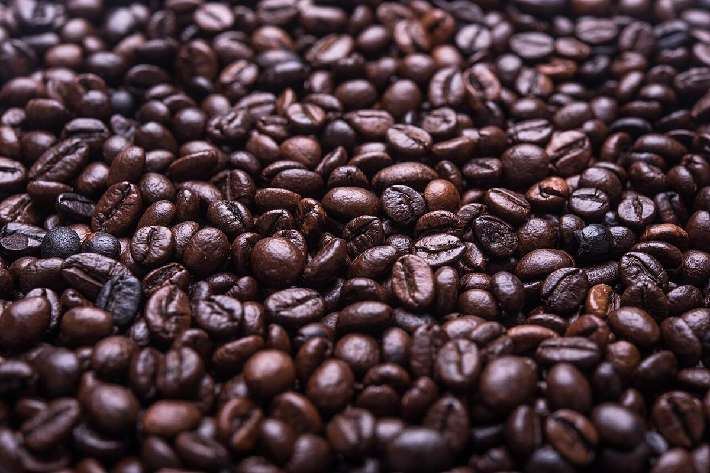
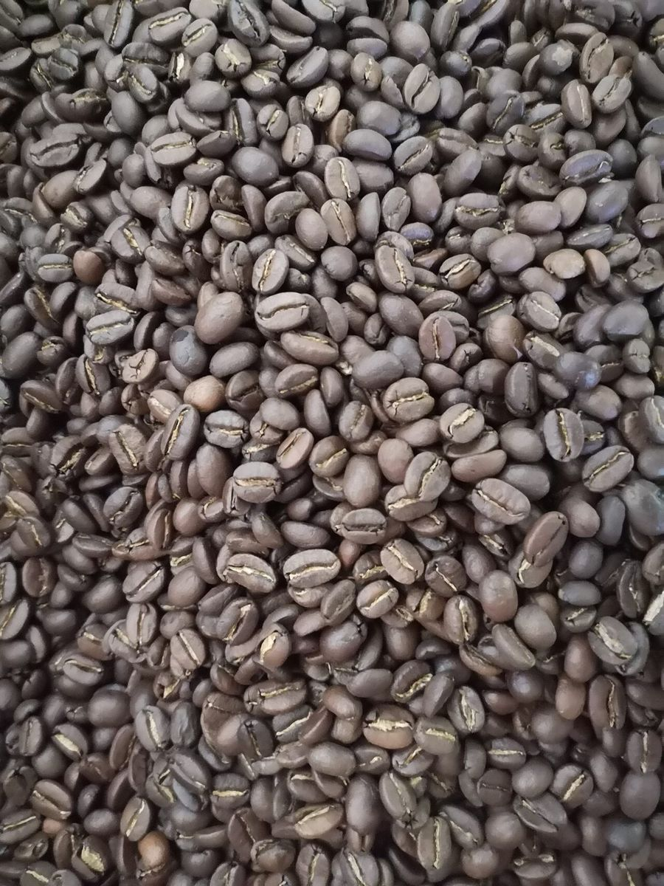
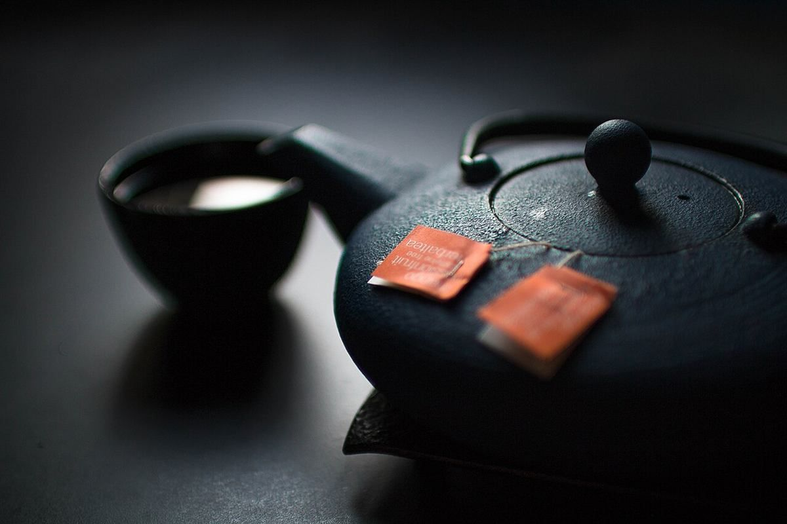

アクセス
場所のご案内
確認できているのは所在地とInstagramのみです。そのほかは準備中です。
| 所在地 | 〒649-5337 和歌山県東牟婁郡那智勝浦町橋ノ川238-1 |
|---|---|
| 電話 | 準備中 |
| 営業時間 | 準備中 |
| 定休日 | 準備中 |
| ご予約 | 準備中 |
| 駐車場 | 準備中 |
| SNS | Instagram @cafecoppe |
写真(イメージ)
コーヒー豆の写真(イメージ)


写真はイメージです。お店のものではなく、この地域を写したものでもありません。
写真(イメージ)
焙煎豆とポットの写真(イメージ)


写真はイメージです。お店のものではありません。